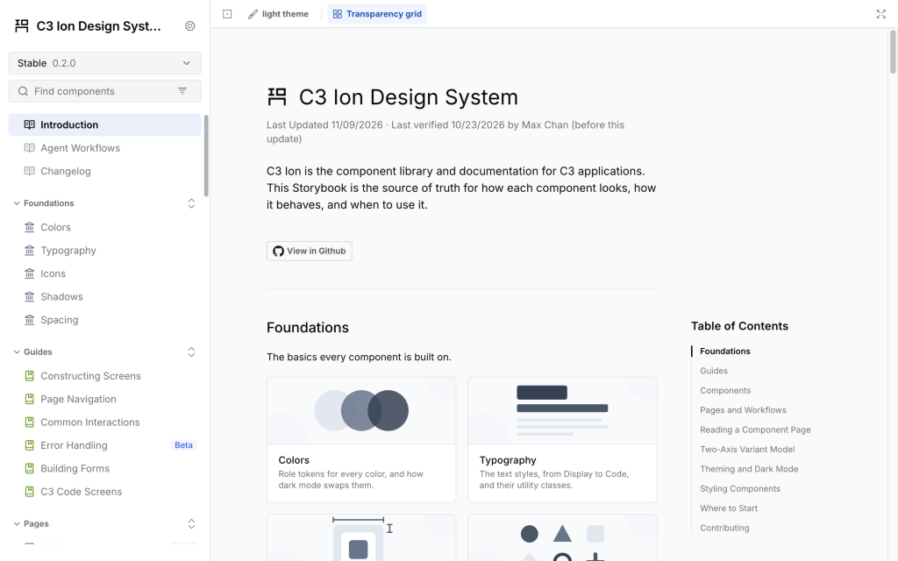
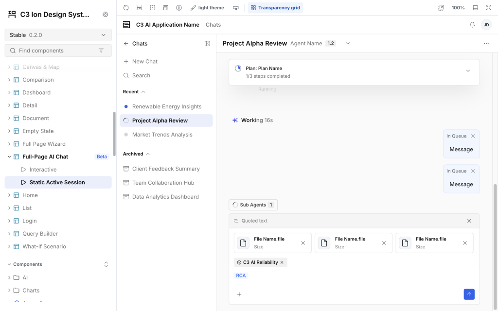
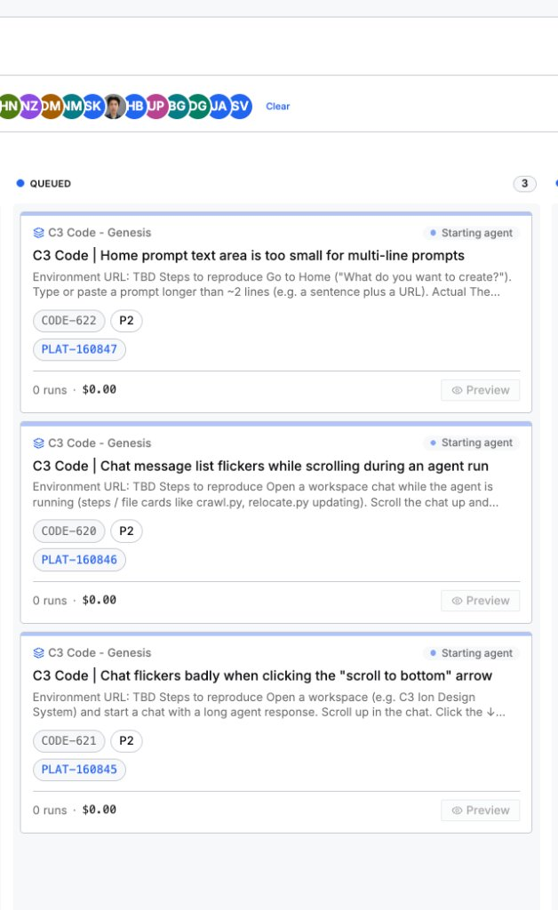
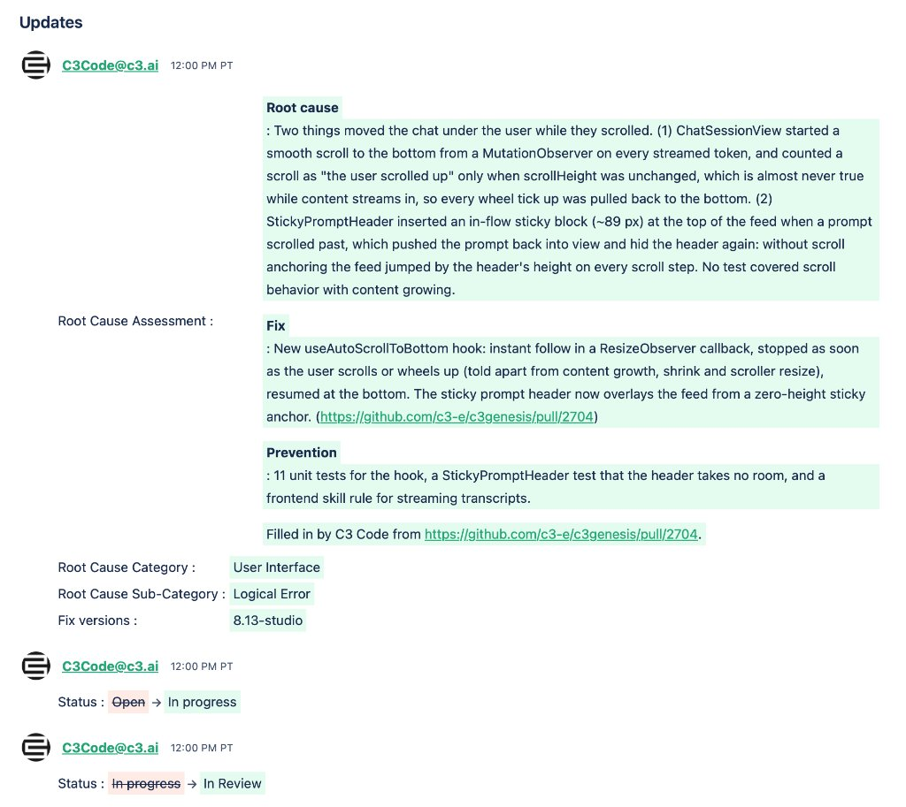

Building an AI-First Design System to Power Autonomous Engineering.
Most design systems are built for humans dragging components in Figma. We rebuilt C3 Ion in production code so both designers and autonomous coding agents could consume it—and used it to transform C3 Code.
Primitive → Semantic → Component CSS contracts shared across Figma & React.
Production React + TypeScript components documented live in C3 Ion Storybook.
Standardized Chain-of-Thought, Tool Call diffs, streaming chat, and citations.
1-label Jira-to-PR autonomous bug resolution and developer Inspection Queue.
Why legacy design systems break in the age of AI agents.
When AI shifts from a sidecar chatbot to an autonomous teammate executing multi-step workflows, static Figma redlines aren't enough—for users or for the builders shipping the product.
"Bolted-On" AI & Opaque Agent Actions
Legacy enterprise tables and forms weren't designed for streaming reasoning, live tool execution, or human-in-the-loop verification.
Every team invented their own spinners, terminal logs, or diff viewers.
Long streaming transcripts hijacked user scroll position and lacked clear action gates.
Coding Agents Can't Read Static Figma PDFs
As we built C3 Code—and used AI agents to build our own frontends—static documentation drifted from production React code.
Hand-off docs went stale immediately; engineers and agents guessed hex values and spacing.
To make C3 Code great, our design system had to live in code as executable React stories + agent skill rules.

Codifying the system where builders actually work.
I partnered with engineering and built our documentation platform and component stories directly in code.
Every color, radius, and spacing token maps from primitive scales to semantic CSS variables (--c3-style-*) so light/dark and high-density states work automatically.
Redesigned the enterprise SideNav rail so Gen AI & Agent workflows lead the hierarchy rather than hiding in a bottom-right corner bubble.
Shipped full-page blueprints (ListPage, AI Chat Session, Agent Workflows) that engineers and C3 Code agents reference directly.

Designing for trust and rapid verification in C3 Code.
We replaced opaque terminal logs with structured, scannable C3 Ion components:
ThinkingSteps)Collapses multi-step agent investigation into readable milestones so engineers see why the agent chose a fix without noise.
Dedicated cards for file reads, inline diffs, and test runs let developers audit changes in seconds.
Sticky prompt headers and smart auto-scroll rules allow engineers to inspect earlier diffs while the agent is still streaming.
From Jira ticket to verified fix with one C3 Code Factory label.
Add C3 Code Factory to any bug ticket to trigger an autonomous order.
Order enters Queued with Jira key, priority badge, and target repo.
C3 Code spins up a sandbox, reproduces the bug, writes tests, and opens a PR.
Developer clicks Preview to verify the live sandbox build and merge.

Every Kanban card, priority badge (P2), status tag, and telemetry counter uses our standardized design system tokens.
Each order tracks agent attempts and token spend (0 runs · $0.00 at queue time, updating live) so leadership can audit ROI.
Agents never merge blindly—the Inspection column gives engineers a 1-click Preview sandbox to sign off.
Full circle: C3 Code fixes its own UI bug—and codifies a new design system rule.

The design system is no longer just a UI kit—it's the guardrail for our AI agents.
By bridging enterprise design systems, React/Storybook architecture, and agentic workflows, we turned C3 Ion into a direct product multiplier for C3 Code.
Trust & Verification at Speed
Standardized Chain-of-Thought, tool-call diffs, and the 1-click Inspection Queue turned autonomous coding from a black box into a workflow developers trust daily.
Built for Humans & Agents
Codifying 3-tier tokens, 25+ primitives, and frontend skill rules in Storybook eliminated design-to-code drift and gave C3 Code agents enforceable UI guardrails.
Strategy Meets Execution
Combined cross-org design direction with hands-on AI prototyping in Claude, React, and Storybook—shipping production foundations rather than static decks.